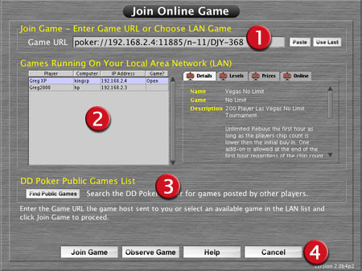
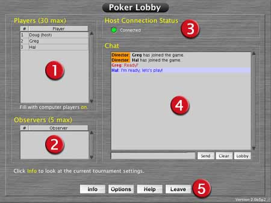

Join Online
Join Online| Join Online |
|
Join Online
|
|
Join Online is used to
join a game on your local area network or over the internet. You may manually
type in or paste a LAN or internet Game URL given to you by a friend for
a private game. Or you may join a public game from the Public
Games List if you profile is online-activated to join public games.
|

Join Game |
|
||||||||||||||||||
Games Running |
This list switches from Games Running On Your LAN to the DD Poker Public Games
List when you click the Find Public Games button.
|
||||||||||||||||||
DD Poker Public Games List |
|
||||||||||||||||||
Buttons |
|
|
Poker Lobby
|

Players |
|
||||||||
Observers |
|
||||||||
Host Connection Status |
|
||||||||
Chat |
You can chat with others that have already joined the tournament as players or observers as you are waiting
for others to join before the tournament starts.
Observers will appear in the chat window in purple with a [obs] next to their name to indicate they are an
observer.
Demo users will appear in the chat window with a [demo]
next to their name to indicate they are a demo user.
|
||||||||
Buttons |
|
Once the host starts the game, your screen with automatically change to the poker table. The game may initially be paused by the host. Once the game starts, you will be prompted with a choice to either play or sit-out. If you do not choose to play within 10 seconds, you will automatically be sat-out until you click your cards and choose Resume Playing. This is done just in case you ran to the bathroom right before the tournament started.
Once you bust out of the tournament, you will automatically change to an observer,
regardless of the maximum observers set by the host at the beginning. As a player,
you will always have the seat on the bottom center of the table. When you change
to an observer, the players may appear to move as the game always displays seat
5 in the bottom middle when you are an observer.
|
Re-Join an Online Game
|
| Use Last |
Click the Use Last button in the Join Online screen and click Join Game. |
| Type It | If you still have the Game URL in the email or instant message type it in or paste it and click Join Game. |